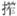

紫萸香慢
姚云文
近重阳、偏多风雨，绝怜此日暄明。问秋香浓未，待携客、出西城。正自羁怀多感，怕荒台高处① ，更不胜情。向尊前又忆、漉酒插花人② ，只座上、已无老兵③ 。 凄清。浅醉还醒，愁不肯、与诗平。记长楸走马④ ，雕弓 柳⑤ ，前事休评。紫萸一枝传赐⑥ ，梦谁到、汉家陵？尽乌纱、便随风去⑦ ，要天知道，华发如此星星，歌罢涕零。
【注释】
①荒台：指彭城之戏马台，宋武帝重阳日曾登临。 ②漉酒：陶渊明曾取头上葛巾漉酒。漉，过滤。 ③老兵：晋谢奕尝逼桓温饮，桓温走避之。奕遂引温一兵帅共饮之。曰：“失一老兵，得一老兵。”借以指酒友。 ④楸：落叶乔木，树高可达三十米。 ⑤

：音责，射。 ⑥紫萸：即茱萸，重阳佩之以避邪。 ⑦乌纱随风：用孟嘉落帽事，参见史达祖《贺新郎·九日》注。【语译】
快到重阳节时，偏偏又多风雨天气，这一天忽然暖和晴明，真叫人喜之不尽。请问茱萸花香是否很浓了呢？我准备拉着朋友的手同出西城。如今正是我客子情怀多感触的时候，只怕登上荒凉的戏马台，就更不胜其悲哀了。拿起酒杯，又使我回想起曾效古人葛巾漉酒、头插黄花的朋友来了，只可惜座中已没有原来的那些狂放的酒友了。
真凄凉寂寞啊！我微微有点醉，可依然清醒，这愁绪总不肯像赋诗一样能得以平静。记得曾在高高的楸林下纵马驰骋，挽起雕弓去把垂杨树枝射穿，往事就不说也罢。一枝紫红的茱萸花传赐了下来，可又有谁梦到了汉家的陵墓呢？任凭这乌纱帽随风吹走吧，我要让老天知道，我头上已长出这么多斑斑白发了啊！唱完此歌，我不觉热泪淋淋。
【赏析】
作者是南宋咸淳年间的进士，入元后，仕于新朝，当过承直郎、儒学提举之类没有多少实权的官，看来也是为了能混口饭吃。他心情是十分矛盾的，甚至非常痛苦，从这首通过写重阳节感受的慢词中所表现出来的恋恋于南宋王朝的沉痛感情看，他的故国之思、亡国之痛，丝毫也不逊于那些结社共咏《乐府补题》的遗民们。
词的上阕，先从重阳节的天气、自己“羁旅多感”，又不见故人等较浅的层面上泛说。稼轩有《踏莎行》庚戌中秋后二夕词云：“思量却也有悲时，重阳节近多风雨。”此首句所本。次句即转愁为喜，说不料到重阳日天气晴暖，令人兴奋异常。“绝怜”，是动相约登高、一览秋光之念的起因，然而实际所获得的只是一腔悲怀而已。欲扬而先抑，然后总体上又是先扬而后抑，词笔夭矫，波澜起伏。接着自述情怯，分两点：怕“羁旅多感”，“更不胜情”，是一层；已无旧时狂放之“老兵”同饮，是二层。这样，就便于下阕放开来抒发重阳之悲感。“菊花须插满头归”“折得黄花插满头”之类写重阳的诗句甚多，此“插花”二字之所出。“已无老兵”，典故之用，也颇幽默；知前所言“携客”之“客”，非在同有前事之经历的人的行列，故无同样的感受。即便能饮，也只好算“新兵”而已。
换头“凄清”二字，文意语气，都与上阕末直接。“浅醉还醒”，也仍就饮酒而言，只是其实意已从重阳风俗之饮菊花酒，转为写借酒浇愁。吟咏者虽有“诗魔”能扰人之说，也不过是说作诗用心良苦，然诗成时，魔亦去，非如愁思之耿耿难遣也。“记长楸”三句，见作者年轻时，不但文章能中举夺魁，还英姿勃勃，驰马弯弓，在众目睽睽下能一献其武艺之身手，从而博得过朝廷的青睐，如此“前事”，而今又岂堪回首！故“紫萸一枝传赐”句，说的也应该就是“前事”，也正值重阳，赐萸是当年朝廷恩宠的表示，所以铭记在心而不能忘。由此，我才想到上阕中作者见重阳日丽，便急着“问：‘秋香浓未？’”这“秋香”，不是菊花，不是桂花，必定就是“紫萸”，因为它在作者心目中有着特殊的意义。从而又悟到作者选择“紫萸香慢”词调（前此未见，或竟是自度）来写，又岂是偶然。在这句之后，接“梦谁到，汉家陵”，几近痛哭。说秋风落帽事，亦如向天表白其心意，求天谅解其苦衷，读来令人生悲。